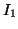
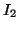
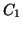
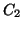
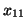
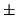
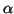
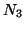

Next: Quantum cluster
Up: SciFi input
Previous: buffer
Contents
Constraints Box
Box Keyword: .<Constraints>
See the main points behind the constrained minimisations in section
1.7. Number of constrains is limited to
N0CNSTR in param.inc file. Constraints are specified
one per line.
- The format for linear constraints is:
where 
, 
, etc. are coordinate indicators containing
atomic number and a letter x, y or z, attached
from the right. The coefficients 
, 
, etc. are associated
with the corresponding atomic coordinates and corresponds to Eq. (20).
For instance, the condition
is equivalent to the following linear constraint:
Note that the first coordinate is used as the redundand one. In the
example above this will be 
.
- The format for the constraint in which the distance between two atoms
in kept constant is:
where D_1x is the keyword,  and
and  - atomic
numbers,
- atomic
numbers,  - the distance (in Å) and
- the distance (in Å) and 
is the sign (either
or ). The  coordinate of atom is considered
as redundand.
coordinate of atom is considered
as redundand.
- The format for the constraint in which the angle

between
three atoms in kept constant is (to be fully implemented when necessary):
where C_1x is the keyword, , and 
- atomic numbers, - the angle (in degrees) and is
the sign (either or ). The coordinate of atom
is considered as redundand.
- The format of the constraint in which the angle between two atoms
and the axis is kept, is given by:
where A_1x is the keyword, and - atomic
numbers, - the angle (in degrees) and is the sign
(either or ). The coordinate of atom is considered
as redundand.
Next: Quantum cluster
Up: SciFi input
Previous: buffer
Contents
Lev Kantorovich
2005-08-04